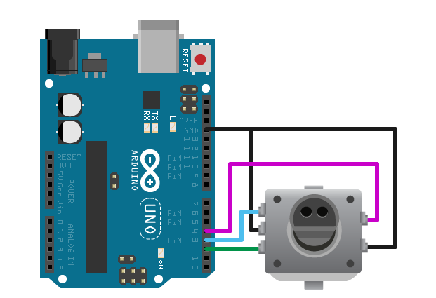

Control Rotary Encoder Knob
This example shows how to use the MATLAB® Support Package for Arduino® Hardware to control a 12-step rotary encoder with a built-in push button.
Contents
Hardware Requirements
- Arduino Uno board
- SparkFun® 12-step rotary encoder with built-in push button
Hardware Setup
Connect the rotary encoder to Arduino hardware:
- Connect the common pin C on encoder to GND pin on Arduino hardware.
- Connect the output A and B on encoder to digital pin 2 and 3 on Arduino hardware.
- Connect the ground pin on encoder to GND pin on Arduino hardware.
- Connect the push button pin on encoder to digital pin 4 on Arduino hardware.
Note: If you are using a different Arduino board than Uno, instead of using digital pin 2 and 3, use any two of the interrupt pins on your board. See Arduino Interrupts for more information about the available interrupt pins.

Create Rotary Encoder Object
Create an arduino object, and include the 'RotaryEncoder' library.
a = arduino('COM64','Uno','Libraries','RotaryEncoder')
a =
arduino with properties:
Port: 'COM64'
Board: 'Uno'
AvailablePins: {'D2-D13', 'A0-A5'}
Libraries: {'RotaryEncoder'}
Create rotary encoder object for knob, specifying the connected output channel A and channel B.
channelA = 'D2'; channelB = 'D3'; encoder = rotaryEncoder(a,channelA,channelB)
encoder =
rotaryEncoder with properties:
ChannelA: 'D2'
ChannelB: 'D3'
PulsesPerRevolution: []
Read Knob Position
The rotary encoder has 12 click positions for each revolution. Each click increases or decreases the count by 4, depending on the direction in which it is rotated. Therefore, the knob position can be represented by integers between 0 and 44.
Turn knob to starting position and reset the count to 0.
resetCount(encoder);
Add logic to display the encoder position when the pushbutton is pressed. If unpressed, pushbutton pin returns 1. Otherwise, it returns 0.
pushbutton = 'D4'; configurePin(a,pushbutton,'Pullup'); while(~readDigitalPin(a,pushbutton)) count = readCount(encoder); pos = mod(count,48); fprintf('Current knob position: %d\n',pos); pause(0.2); end
Current knob position: 0 Current knob position: 44 Current knob position: 40 Current knob position: 36
Clean Up
When the connection is no longer needed, clear the rotary encoder and arduino object.
clear encoder a